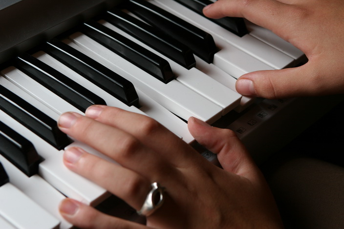
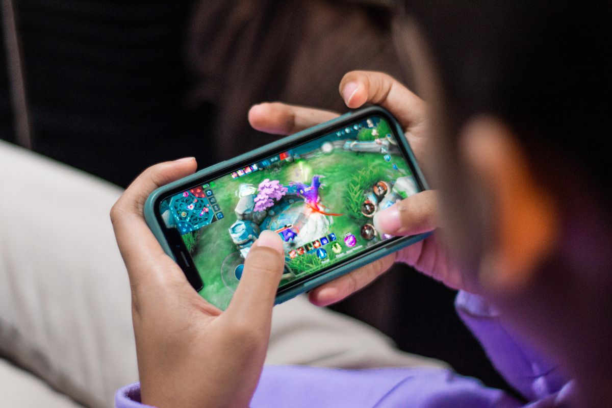

งานอดิเรกของฉัน
นี่คือภาพกิจกรรมที่ฉันชอบทำเวลาว่างครับ:

เล่นเปียโน
ฟังเพลง

เล่นเกม
ประโยชน์ของกิจกรรมที่ผมทำ
- เล่นเปียโน: ช่วยกระตุ้นสมองทั้งสองซีกให้ทำงานประสานกัน
- ฟังเพลง: เพิ่มสมาธิ ช่วยให้โฟกัสกับการทำงาน
- เล่นเกม: ฝึกการแก้ปัญหาและการวางแผน